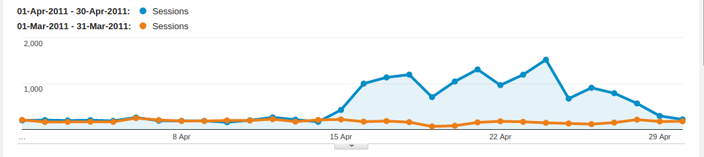
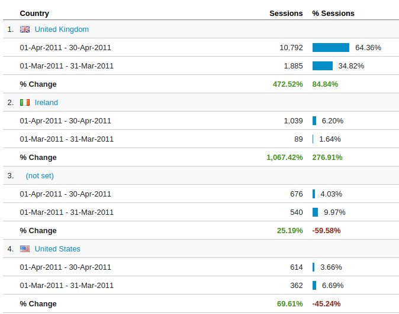
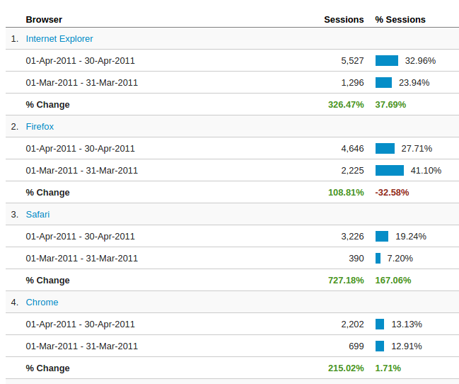
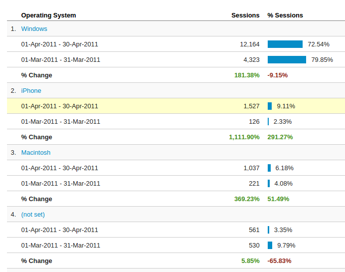
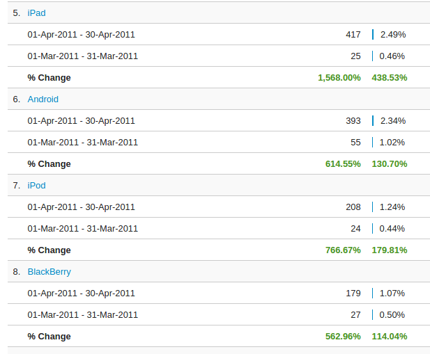
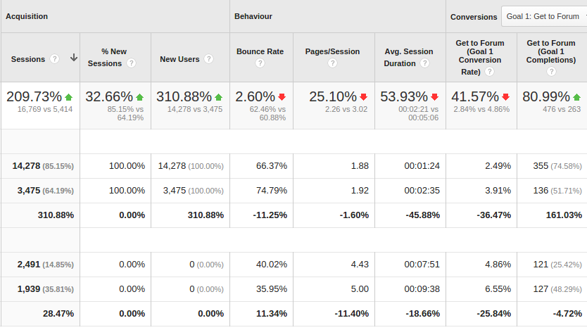
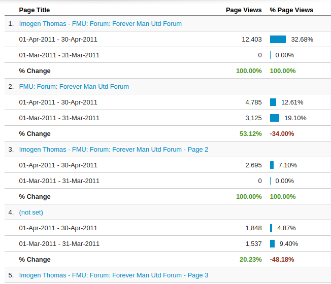
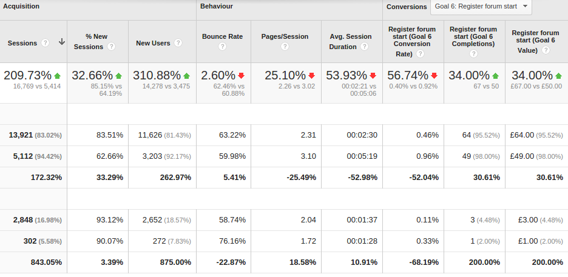

Initial Thoughts
- Substantial Growth
- 300% more users
- 200% more sessions
- 132% more page views
Azeem Iqbal
Taking a deeper look






Possible explanations for growth:
Taking a look at keywords:
https://www.youtube.com/watch?v=Vv3xdMSRBzQ#t=3s
Also, taking a look at the most viewed pages:

